Demography and Population Transition
Population dynamics shape the scale and timing of education, employment, urban-service, and social-protection demands.
Total fertility rate
NGA records 3.82 births per woman in 2030. The earliest available value in this run is 5.50 in 2015, a change of -1.68 births per woman. The median of peers' latest non-missing observations is 2.92 births per woman. This is a descriptive comparison; different latest years and source-specific estimation methods require caution.
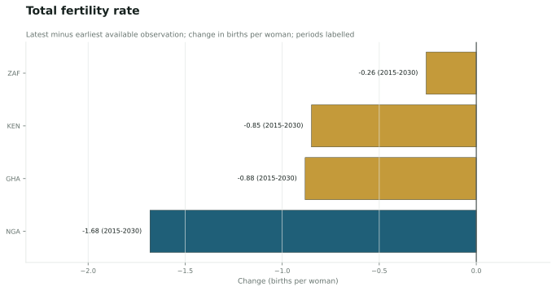
Source: United Nations DESA Population Division; World Population Prospects 2024, Medium variant; indicator TFR; unit: births per woman. Limitation: WPP combines estimates and projections. Preserve the revision and projection variant; population-count columns are generally expressed in thousands unless documented otherwise.
Population total
NGA records 237,527,782 persons in 2025. The earliest available value in this run is 126,382,494 in 2000, a change of +111145288.00 persons. The median of peers' latest non-missing observations is 57,532,493 persons. This is a descriptive comparison; different latest years and source-specific estimation methods require caution.
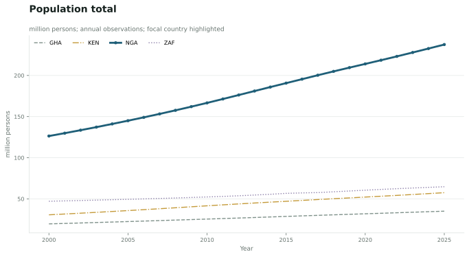
Source: World Bank; World Development Indicators; indicator SP.POP.TOTL; unit: persons. Limitation: Population estimates are revised after censuses and demographic updates.
Population growth
NGA records 2.1 annual percent in 2025. The earliest available value in this run is 2.7 in 2000, a change of -0.61 annual percent. The median of peers' latest non-missing observations is 1.8 annual percent. This is a descriptive comparison; different latest years and source-specific estimation methods require caution.
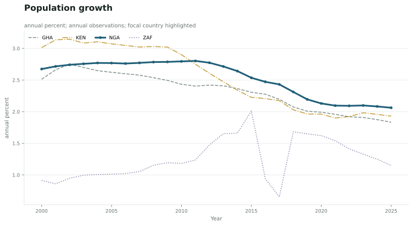
Source: World Bank; World Development Indicators; indicator SP.POP.GROW; unit: annual percent. Limitation: This is a growth rate rather than a population level.
Urban population
NGA records 63.8 percent of population in 2025. The earliest available value in this run is 43.3 in 2000, a change of +20.50 percent of population. The median of peers' latest non-missing observations is 58.9 percent of population. This is a descriptive comparison; different latest years and source-specific estimation methods require caution.
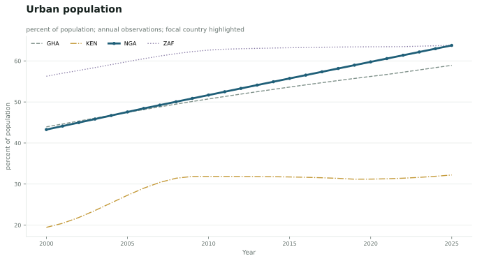
Source: World Bank; World Development Indicators; indicator SP.URB.TOTL.IN.ZS; unit: percent of population. Limitation: National definitions of urban areas differ.
Population ages 0 to 14
NGA records 40.5 percent of population in 2025. The earliest available value in this run is 43.7 in 2000, a change of -3.22 percent of population. The median of peers' latest non-missing observations is 35.4 percent of population. This is a descriptive comparison; different latest years and source-specific estimation methods require caution.
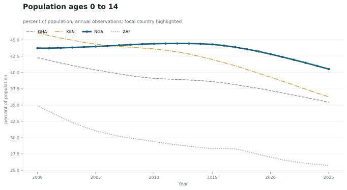
Source: World Bank; World Development Indicators; indicator SP.POP.0014.TO.ZS; unit: percent of population. Limitation: Age shares are model-based demographic estimates.
Annual change in total fertility rate
NGA records -2.5 percent in 2030. The earliest available value in this run is -2.9 in 2016, a change of +0.41 percent. The median of peers' latest non-missing observations is -1.2 percent. This is a descriptive comparison; different latest years and source-specific estimation methods require caution.
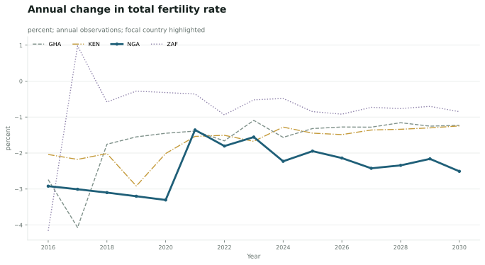
Source: GDI Country Studies calculation; Derived from normalized input series in this run; indicator TFR_ANNUAL_CHANGE; unit: percent. Limitation: A derived value inherits the definitions, revisions, and missingness of every input series.
Macroeconomic Performance
Growth rates indicate macroeconomic movement but should be interpreted with per-capita outcomes, volatility, inflation, and the actual-versus-projection boundary.
Real GDP growth
NGA records 4.2 percent change in 2030. The earliest available value in this run is 2.7 in 2015, a change of +1.53 percent change. The median of peers' latest non-missing observations is 5.0 percent change. This is a descriptive comparison; different latest years and source-specific estimation methods require caution.
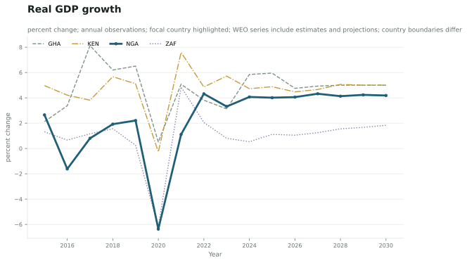
Source: International Monetary Fund; World Economic Outlook, record the downloaded WEO vintage; indicator NGDP_RPCH; unit: percent change. Limitation: WEO contains historical data, IMF staff estimates, and projections. Record the vintage and verify each country's Latest Actual Annual Data before classifying years.
Nigeria minus peer-median growth
NGA records -0.8 percent change in 2030. The earliest available value in this run is 0.5 in 2015, a change of -1.35 percent change. This is a descriptive comparison; different latest years and source-specific estimation methods require caution.
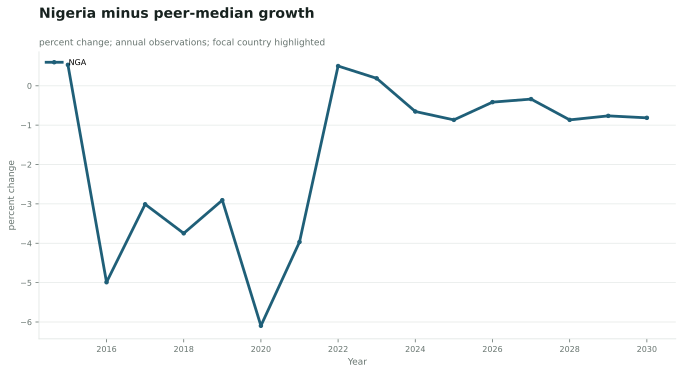
Source: GDI Country Studies calculation; Peer-country benchmark from normalized input series; indicator NGDP_RPCH_GAP; unit: percent change. Limitation: The peer set must be justified by region, income, structure, or the causal comparison being made.
GDP per capita at purchasing power parity
NGA records 8,145.1 constant 2021 international dollars in 2025. The earliest available value in this run is 4,889.0 in 2000, a change of +3256.14 constant 2021 international dollars. The median of peers' latest non-missing observations is 7,357.8 constant 2021 international dollars. This is a descriptive comparison; different latest years and source-specific estimation methods require caution.
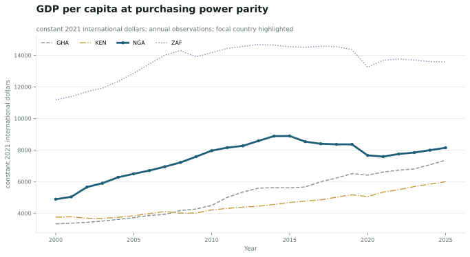
Source: World Bank; World Development Indicators; indicator NY.GDP.PCAP.PP.KD; unit: constant 2021 international dollars. Limitation: PPP benchmark revisions can change levels and historical comparisons.
Inflation consumer prices
NGA records 23.0 annual percent in 2025. The earliest available value in this run is 6.9 in 2000, a change of +16.08 annual percent. The median of peers' latest non-missing observations is 4.1 annual percent. This is a descriptive comparison; different latest years and source-specific estimation methods require caution.
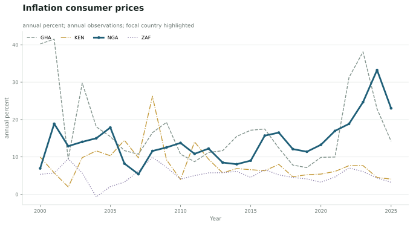
Source: World Bank; World Development Indicators; indicator FP.CPI.TOTL.ZG; unit: annual percent. Limitation: National consumption baskets and rebasing schedules differ.
Target-country and peer-median real GDP growth
NGA records 4.2 percent change in 2030. The earliest available value in this run is 2.7 in 2015, a change of +1.53 percent change. The median of peers' latest non-missing observations is 5.0 percent change. This is a descriptive comparison; different latest years and source-specific estimation methods require caution.
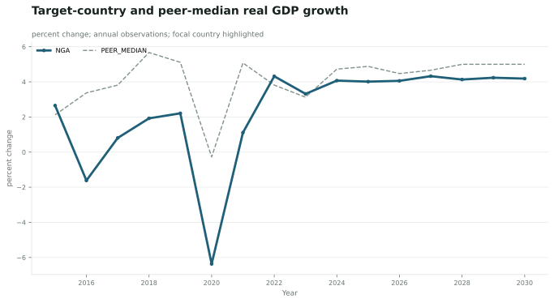
Source: GDI Country Studies calculation; Peer-country benchmark from normalized input series; indicator NGDP_RPCH_TARGET_PEERS; unit: percent change. Limitation: The peer set must be justified by region, income, structure, or the causal comparison being made.
Fiscal Capacity and Constraints
Revenue mobilization and public debt describe implementation capacity and fiscal exposure; WEO estimates and projections must be separated from historical observations.
General government revenue
NGA records 10.3 percent of GDP in 2030. The earliest available value in this run is 5.1 in 2015, a change of +5.18 percent of GDP. The median of peers' latest non-missing observations is 17.0 percent of GDP. This is a descriptive comparison; different latest years and source-specific estimation methods require caution.
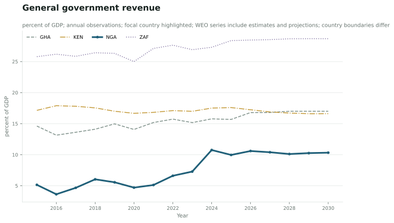
Source: International Monetary Fund; World Economic Outlook, record the downloaded WEO vintage; indicator GGR_NGDP; unit: percent of GDP. Limitation: General-government coverage and the historical-estimate-projection boundary must be checked before interpretation.; WEO contains historical data, IMF staff estimates, and projections. Record the vintage and verify each country's Latest Actual Annual Data before classifying years.
General government gross debt
NGA records 30.9 percent of GDP in 2030. The earliest available value in this run is 14.9 in 2015, a change of +16.01 percent of GDP. The median of peers' latest non-missing observations is 74.2 percent of GDP. This is a descriptive comparison; different latest years and source-specific estimation methods require caution.
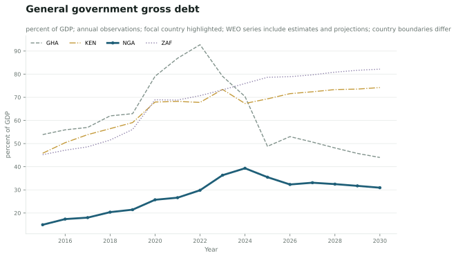
Source: International Monetary Fund; World Economic Outlook, record the downloaded WEO vintage; indicator GGXWDG_NGDP; unit: percent of GDP. Limitation: Debt definitions and public-sector coverage vary; projections are not observed outcomes.; WEO contains historical data, IMF staff estimates, and projections. Record the vintage and verify each country's Latest Actual Annual Data before classifying years.
Economic Structure and Transformation
Sectoral value-added shares reveal the production structure behind aggregate growth and the challenge of diversification.
Agriculture value added
NGA records 23.0 percent of GDP in 2025. The earliest available value in this run is 21.4 in 2000, a change of +1.62 percent of GDP. The median of peers' latest non-missing observations is 21.3 percent of GDP. This is a descriptive comparison; different latest years and source-specific estimation methods require caution.
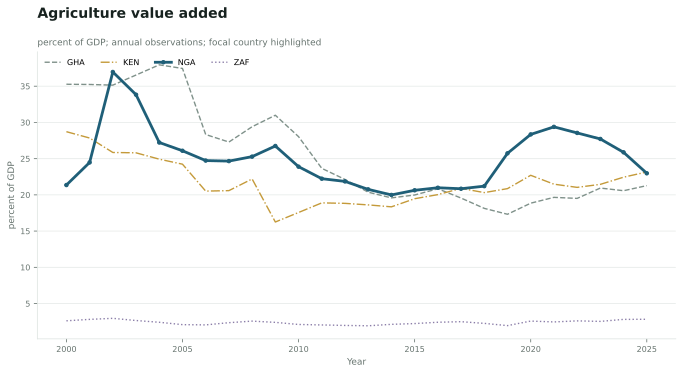
Source: World Bank; World Development Indicators; indicator NV.AGR.TOTL.ZS; unit: percent of GDP. Limitation: National-accounts rebasing and sector classifications can create breaks.
Industry value added
NGA records 16.4 percent of GDP in 2025. The earliest available value in this run is 33.8 in 2000, a change of -17.38 percent of GDP. The median of peers' latest non-missing observations is 24.1 percent of GDP. This is a descriptive comparison; different latest years and source-specific estimation methods require caution.
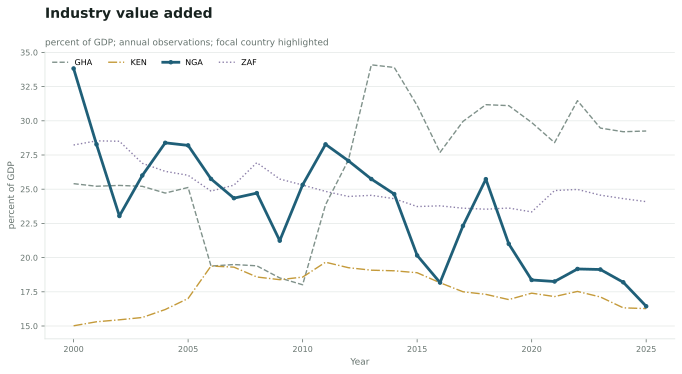
Source: World Bank; World Development Indicators; indicator NV.IND.TOTL.ZS; unit: percent of GDP. Limitation: Industry includes construction; national-accounts rebasing can create breaks.
Services value added
NGA records 58.2 percent of GDP in 2025. The earliest available value in this run is 43.8 in 2000, a change of +14.43 percent of GDP. The median of peers' latest non-missing observations is 55.1 percent of GDP. This is a descriptive comparison; different latest years and source-specific estimation methods require caution.
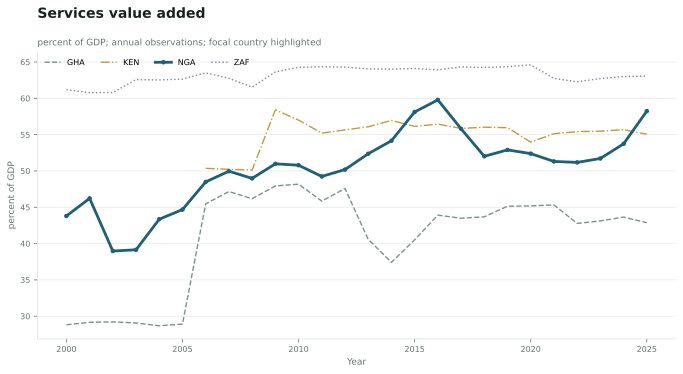
Source: World Bank; World Development Indicators; indicator NV.SRV.TOTL.ZS; unit: percent of GDP. Limitation: Service-sector classifications and residual components differ across revisions.
Labor-Market Conditions
Harmonized unemployment estimates permit comparison, but informality and source/model status remain central to interpretation.
Unemployment rate
NGA records 3.1 percent of labor force in 2025. The earliest available value in this run is 4.1 in 2015, a change of -1.07 percent of labor force. The median of peers' latest non-missing observations is 5.4 percent of labor force. This is a descriptive comparison; different latest years and source-specific estimation methods require caution.
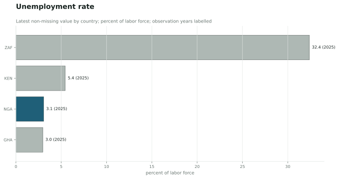
Source: International Labour Organization; ILOSTAT indicator web service; indicator UNE_2EAP_SEX_AGE_RT_A; unit: percent of labor force. Limitation: ILOSTAT may disseminate national-source observations and ILO modelled estimates. Preserve source, sex, age, classification, status flags, and methodological notes.
Youth unemployment
NGA records 5.3 percent of youth labor force in 2025. The earliest available value in this run is 7.6 in 2000, a change of -2.23 percent of youth labor force. The median of peers' latest non-missing observations is 15.2 percent of youth labor force. This is a descriptive comparison; different latest years and source-specific estimation methods require caution.
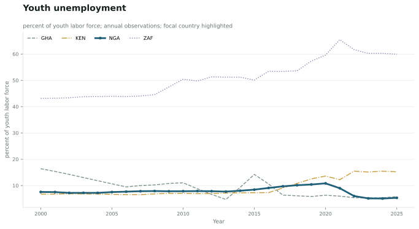
Source: World Bank; World Development Indicators; indicator SL.UEM.1524.ZS; unit: percent of youth labor force. Limitation: The denominator is the youth labor force, not all young people; informality limits interpretation.
Female labor force participation
NGA records 80.7 percent of female population ages 15 and older in 2025. The earliest available value in this run is 77.6 in 2000, a change of +3.15 percent of female population ages 15 and older. The median of peers' latest non-missing observations is 55.3 percent of female population ages 15 and older. This is a descriptive comparison; different latest years and source-specific estimation methods require caution.
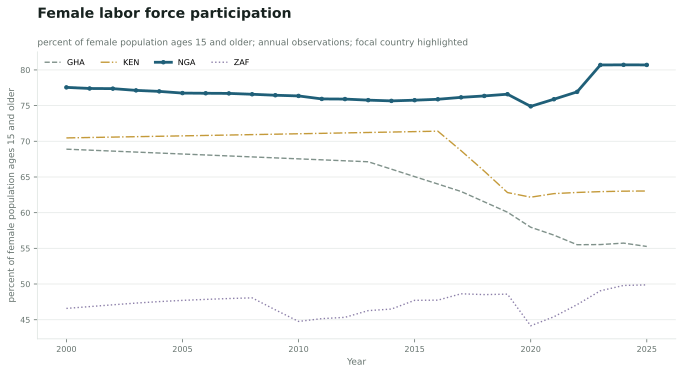
Source: World Bank; World Development Indicators; indicator SL.TLF.CACT.FE.ZS; unit: percent of female population ages 15 and older. Limitation: Participation does not measure hours, earnings, formality, or job quality.
Vulnerable employment
NGA records 66.5 percent of total employment in 2025. The earliest available value in this run is 73.9 in 2000, a change of -7.43 percent of total employment. The median of peers' latest non-missing observations is 60.0 percent of total employment. This is a descriptive comparison; different latest years and source-specific estimation methods require caution.
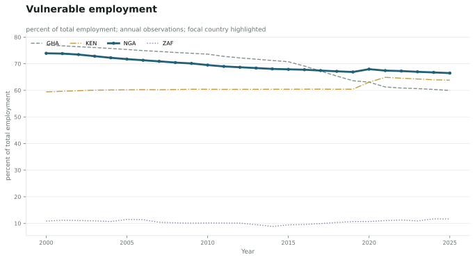
Source: World Bank; World Development Indicators; indicator SL.EMP.VULN.ZS; unit: percent of total employment. Limitation: Employment-status categories are a proxy, not a direct legal or multidimensional measure of job quality.
Education and Human Capital
Literacy, secondary access, and public education effort capture different stages of human-capital formation and should not be treated as interchangeable.
Adult literacy rate
NGA records 70.4 percent of people ages 15 and older in 2024. The earliest available value in this run is 54.8 in 2003, a change of +15.64 percent of people ages 15 and older. The median of peers' latest non-missing observations is 82.2 percent of people ages 15 and older. This is a descriptive comparison; different latest years and source-specific estimation methods require caution.
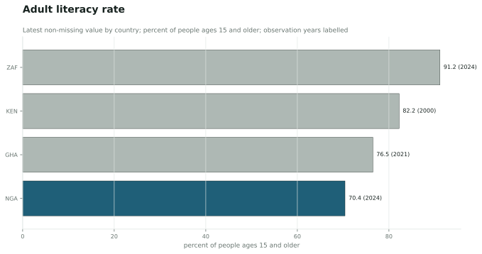
Source: World Bank; World Development Indicators; indicator SE.ADT.LITR.ZS; unit: percent of people ages 15 and older. Limitation: Assessment methods and observation years differ; literacy is not a direct measure of learning quality.
Secondary school enrollment gross
NGA records 46.9 percent in 2023. The earliest available value in this run is 24.0 in 2000, a change of +22.93 percent. The median of peers' latest non-missing observations is 84.3 percent. This is a descriptive comparison; different latest years and source-specific estimation methods require caution.
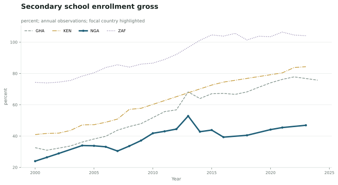
Source: World Bank; World Development Indicators; indicator SE.SEC.ENRR; unit: percent. Limitation: Gross enrollment can exceed 100 and does not measure completion or learning.
Government education expenditure
NGA records 0.3 percent of GDP in 2023. The earliest available value in this run is 0.5 in 2012, a change of -0.23 percent of GDP. The median of peers' latest non-missing observations is 4.0 percent of GDP. This is a descriptive comparison; different latest years and source-specific estimation methods require caution.
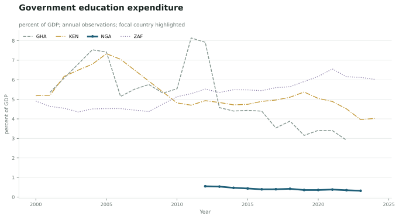
Source: World Bank; World Development Indicators; indicator SE.XPD.TOTL.GD.ZS; unit: percent of GDP. Limitation: Coverage across government levels and off-budget spending can differ.
Health Outcomes, Capacity, and Financing
Health spending and service capacity are inputs; mortality and longevity are outcomes affected by access, quality, poverty, and demographic conditions.
Current health expenditure as a share of GDP
NGA records 4.2 percent of GDP in 2023. The earliest available value in this run is 3.2 in 2000, a change of +0.99 percent of GDP. The median of peers' latest non-missing observations is 4.4 percent of GDP. This is a descriptive comparison; different latest years and source-specific estimation methods require caution.
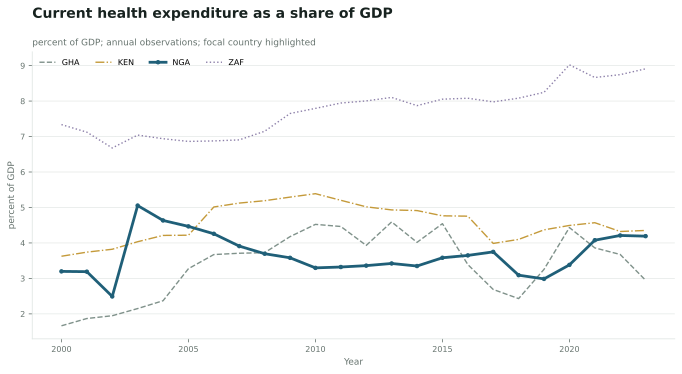
Source: World Bank; World Development Indicators; indicator SH.XPD.CHEX.GD.ZS; unit: percent of GDP.
Physicians per 1,000 people
NGA records 0.38 per 1,000 people in 2023. The earliest available value in this run is 0.27 in 2000, a change of +0.11 per 1,000 people. The median of peers' latest non-missing observations is 0.29 per 1,000 people. This is a descriptive comparison; different latest years and source-specific estimation methods require caution.
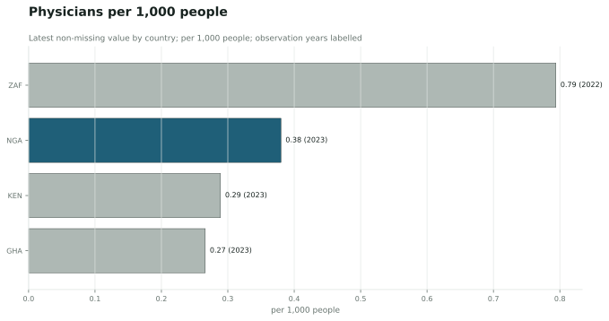
Source: World Bank; World Development Indicators; indicator SH.MED.PHYS.ZS; unit: per 1,000 people. Limitation: Observation years and definitions of practicing physicians vary.
Hospital beds per 1,000 people
NGA records 0.50 per 1,000 people in 2004. The earliest available value in this run is 0.50 in 2004, a change of +0.00 per 1,000 people. The median of peers' latest non-missing observations is 1.33 per 1,000 people. This is a descriptive comparison; different latest years and source-specific estimation methods require caution.
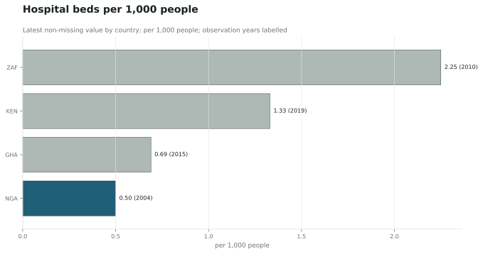
Source: World Bank; World Development Indicators; indicator SH.MED.BEDS.ZS; unit: per 1,000 people. Limitation: Observation years and facility coverage vary.
Domestic general government health expenditure
NGA records 0.6 percent of GDP in 2023. The earliest available value in this run is 0.6 in 2000, a change of +0.02 percent of GDP. The median of peers' latest non-missing observations is 2.0 percent of GDP. This is a descriptive comparison; different latest years and source-specific estimation methods require caution.
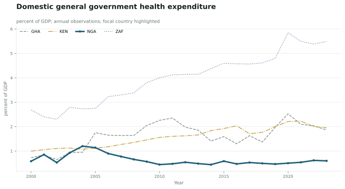
Source: World Bank; World Development Indicators; indicator SH.XPD.GHED.GD.ZS; unit: percent of GDP. Limitation: A GDP share does not measure efficiency, incidence, or service quality.
Under-five mortality rate
NGA records 115.6 per 1,000 live births in 2024. The earliest available value in this run is 177.3 in 2000, a change of -61.70 per 1,000 live births. The median of peers' latest non-missing observations is 35.90 per 1,000 live births. This is a descriptive comparison; different latest years and source-specific estimation methods require caution.
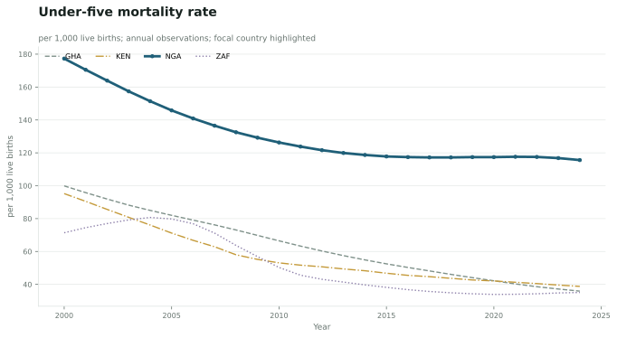
Source: World Bank; World Development Indicators; indicator SH.DYN.MORT; unit: per 1,000 live births. Limitation: Modeled estimates combine surveys, censuses, and registration sources.
Maternal mortality ratio
NGA records 993.0 per 100,000 live births in 2023. The earliest available value in this run is 1,136.0 in 2000, a change of -143.00 per 100,000 live births. The median of peers' latest non-missing observations is 149.0 per 100,000 live births. This is a descriptive comparison; different latest years and source-specific estimation methods require caution.
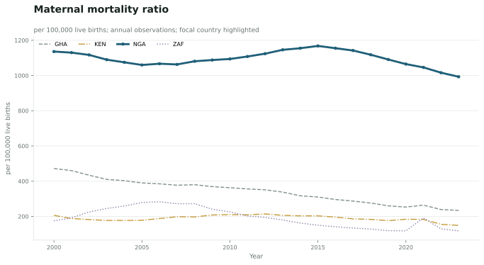
Source: World Bank; World Development Indicators; indicator SH.STA.MMRT; unit: per 100,000 live births. Limitation: Uncertainty is substantial where civil-registration and cause-of-death systems are incomplete.
Water, Sanitation, and Financial Inclusion
Basic household services and access to formal finance identify constraints that national averages of output or connectivity can conceal.
Account ownership
NGA records 63.3 percent of population ages 15 and older in 2024. The earliest available value in this run is 29.7 in 2011, a change of +33.59 percent of population ages 15 and older. The median of peers' latest non-missing observations is 81.2 percent of population ages 15 and older. This is a descriptive comparison; different latest years and source-specific estimation methods require caution.
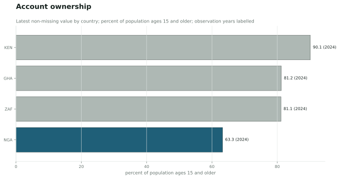
Source: World Bank; World Development Indicators; indicator FX.OWN.TOTL.ZS; unit: percent of population ages 15 and older. Limitation: Survey waves are intermittent and account ownership does not measure active use or financial health.
Safely managed drinking water services
NGA records 29.9 percent of population in 2024. The earliest available value in this run is 12.6 in 2000, a change of +17.29 percent of population. The median of peers' latest non-missing observations is 55.5 percent of population. This is a descriptive comparison; different latest years and source-specific estimation methods require caution.
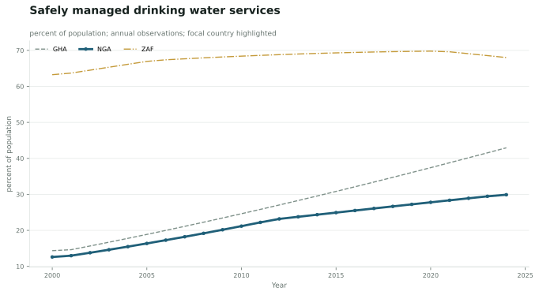
Source: World Bank; World Development Indicators; indicator SH.H2O.SMDW.ZS; unit: percent of population. Limitation: Safely managed service requires accessibility, availability, and quality; missing values must not be replaced by basic-service estimates.
Safely managed sanitation services
NGA records 32.2 percent of population in 2024. The earliest available value in this run is 20.5 in 2000, a change of +11.71 percent of population. The median of peers' latest non-missing observations is 35.8 percent of population. This is a descriptive comparison; different latest years and source-specific estimation methods require caution.
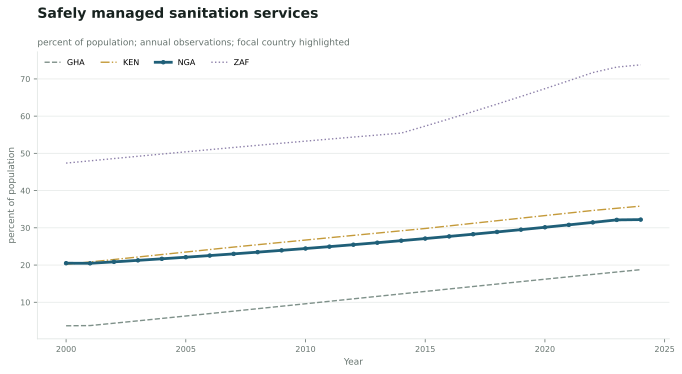
Source: World Bank; World Development Indicators; indicator SH.STA.SMSS.ZS; unit: percent of population. Limitation: Safely managed sanitation is stricter than basic sanitation; country coverage may be incomplete.
Environmental Pressure
Per-capita emissions provide context for the scale and composition of environmental pressure, not a complete measure of climate vulnerability.
CO2 emissions excluding LULUCF per capita
NGA records 0.57 metric tons CO2 equivalent per capita in 2024. The earliest available value in this run is 0.79 in 2000, a change of -0.23 metric tons CO2 equivalent per capita. The median of peers' latest non-missing observations is 0.70 metric tons CO2 equivalent per capita. This is a descriptive comparison; different latest years and source-specific estimation methods require caution.
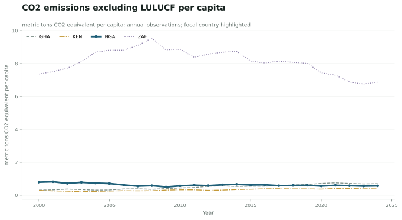
Source: World Bank; World Development Indicators; indicator EN.GHG.CO2.PC.CE.AR5; unit: metric tons CO2 equivalent per capita. Limitation: This excludes land-use change and does not measure climate vulnerability or local pollution.
Trade and External-Economy Structure
Trade intensity, external balances, export scale and composition, and technology content reveal both international integration and exposure to commodity, demand, and financing shocks.
Merchandise export concentration
NGA records 0.62 index in 2025. The earliest available value in this run is 0.85 in 1995, a change of -0.24 index. The median of peers' latest non-missing observations is 0.19 index. This is a descriptive comparison; different latest years and source-specific estimation methods require caution.
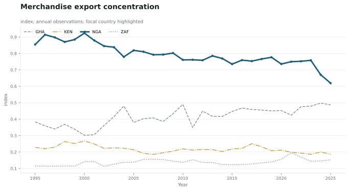
Source: United Nations Trade and Development; UNCTAD Data Hub bulk table; indicator EXPORT_CONCENTRATION; unit: index. Limitation: UNCTAD table dimensions vary. Preserve table ID, release/vintage, economy coding, flow/product/partner filters, missing-value flags, and footnotes.
Current account balance
NGA records 4.8 percent of GDP in 2025. The earliest available value in this run is 10.7 in 2000, a change of -5.91 percent of GDP. The median of peers' latest non-missing observations is -0.4 percent of GDP. This is a descriptive comparison; different latest years and source-specific estimation methods require caution.
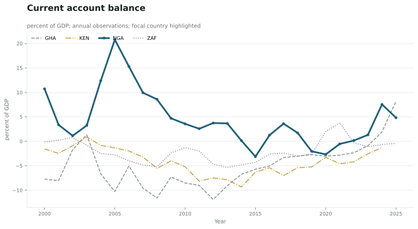
Source: World Bank; World Development Indicators; indicator BN.CAB.XOKA.GD.ZS; unit: percent of GDP. Limitation: Revisions and exceptional commodity-price years can materially affect the series.
International tourism arrivals
NGA records 5,265,000 arrivals in 2016. The earliest available value in this run is 1,492,000 in 2000, a change of +3773000.00 arrivals. The median of peers' latest non-missing observations is 2,049,000 arrivals. This is a descriptive comparison; different latest years and source-specific estimation methods require caution.
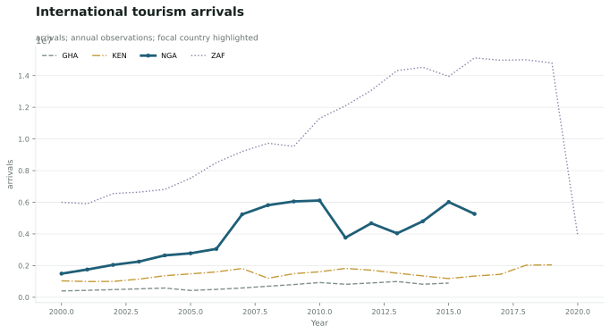
Source: World Bank; World Development Indicators; indicator ST.INT.ARVL; unit: arrivals. Limitation: Countries differ in whether visitors, tourists, or border entries are counted.
Medium- and high-tech manufacturing value added
NGA records 33.4 percent of manufacturing value added in 2022. The earliest available value in this run is 33.4 in 2000, a change of +0.00 percent of manufacturing value added. The median of peers' latest non-missing observations is 15.1 percent of manufacturing value added. This is a descriptive comparison; different latest years and source-specific estimation methods require caution.
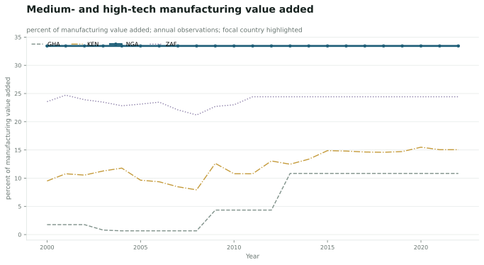
Source: World Bank; World Development Indicators; indicator NV.MNF.TECH.ZS.UN; unit: percent of manufacturing value added. Limitation: Industry classifications and missing years require caution.
High-technology exports
NGA records 2.7 percent of manufactured exports in 2024. The earliest available value in this run is 2.6 in 2009, a change of +0.07 percent of manufactured exports. The median of peers' latest non-missing observations is 3.2 percent of manufactured exports. This is a descriptive comparison; different latest years and source-specific estimation methods require caution.
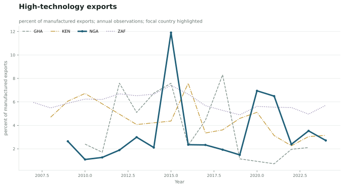
Source: World Bank; World Development Indicators; indicator TX.VAL.TECH.MF.ZS; unit: percent of manufactured exports. Limitation: Re-exports and classification changes can affect the share.
Merchandise exports
NGA records 55,468,000,000 current US dollars in 2025. The earliest available value in this run is 20,975,000,000 in 2000, a change of +34493000000.00 current US dollars. The median of peers' latest non-missing observations is 31,107,000,000 current US dollars. This is a descriptive comparison; different latest years and source-specific estimation methods require caution.
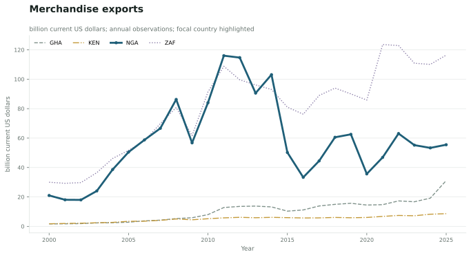
Source: World Bank; World Development Indicators; indicator TX.VAL.MRCH.CD.WT; unit: current US dollars. Limitation: Current-dollar values combine price, quantity, and exchange-rate movements.
Fuel imports
NGA records 38.0 percent of merchandise imports in 2024. The earliest available value in this run is 1.7 in 2000, a change of +36.23 percent of merchandise imports. The median of peers' latest non-missing observations is 23.5 percent of merchandise imports. This is a descriptive comparison; different latest years and source-specific estimation methods require caution.
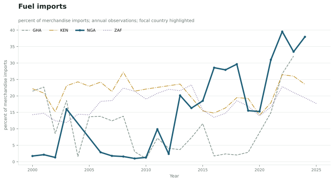
Source: World Bank; World Development Indicators; indicator TM.VAL.FUEL.ZS.UN; unit: percent of merchandise imports. Limitation: Product classifications and reporting gaps vary.
Foreign direct investment net inflows
NGA records 1.4 percent of GDP in 2025. The earliest available value in this run is 1.6 in 2000, a change of -0.27 percent of GDP. The median of peers' latest non-missing observations is 0.4 percent of GDP. This is a descriptive comparison; different latest years and source-specific estimation methods require caution.
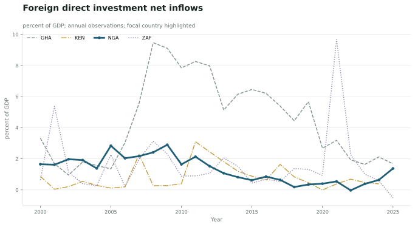
Source: World Bank; World Development Indicators; indicator BX.KLT.DINV.WD.GD.ZS; unit: percent of GDP. Limitation: FDI flows are volatile and can include exceptional intracompany transactions.
Governance and Executive Organization
Perception-based governance estimates and coded cabinet data are diagnostic measures. They do not directly establish administrative performance, policy quality, or causal effects.
Government effectiveness estimate
NGA records -1.0 estimate (-2.5 to 2.5) in 2024. The earliest available value in this run is -0.9 in 2015, a change of -0.09 estimate (-2.5 to 2.5). The median of peers' latest non-missing observations is -0.2 estimate (-2.5 to 2.5). This is a descriptive comparison; different latest years and source-specific estimation methods require caution.
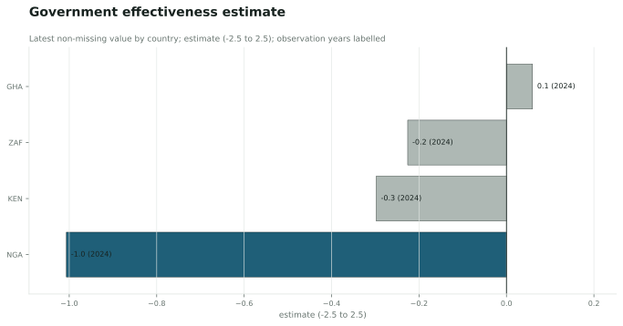
Source: World Bank; Worldwide Governance Indicators; indicator GOV_WGI_GE.EST; unit: estimate (-2.5 to 2.5). Limitation: Use as a diagnostic signal with its uncertainty, not as a direct measure of administrative performance.
Leader's total observed experience
NGA records 3.00 years in 2025. The earliest available value in this run is 3.00 in 2015, a change of +0.00 years. The median of peers' latest non-missing observations is 5.00 years. This is a descriptive comparison; different latest years and source-specific estimation methods require caution.
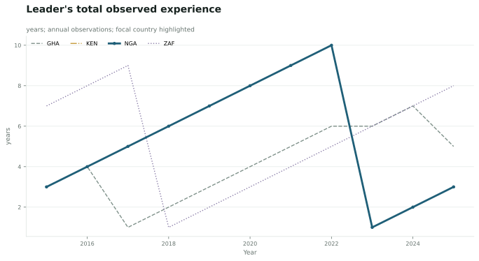
Source: WhoGov (Nuffield College and University of Oslo); WhoGov cross-sectional dataset, version 4.0; indicator leaderexperience_total; unit: years. Limitation: WhoGov is a research dataset rather than national official statistics. Annual records normally represent the cabinet observed in July (September 1966 and January 1970). Counts total observed years as leader and begins at 1 on first appearance; experience before the dataset starts in 1966 is not fully observed.
Average cabinet tenure
NGA records 2.68 years in 2025. The earliest available value in this run is 1.21 in 2016, a change of +1.47 years. The median of peers' latest non-missing observations is 2.82 years. This is a descriptive comparison; different latest years and source-specific estimation methods require caution.
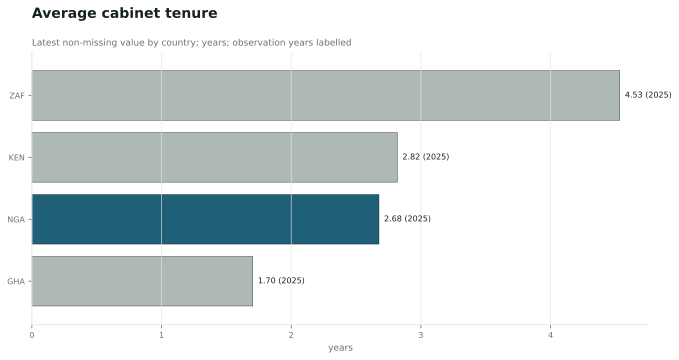
Source: WhoGov (Nuffield College and University of Oslo); WhoGov cross-sectional dataset, version 4.0; indicator average_minister; unit: years. Limitation: WhoGov is a research dataset rather than national official statistics. Annual records normally represent the cabinet observed in July (September 1966 and January 1970). Average time in cabinet among ministers in the annual snapshot. Verify the codebook and do not interpret tenure alone as expertise or performance.
Women among cabinet ministers
NGA records 8.8 percent in 2025. The earliest available value in this run is 12.5 in 2016, a change of -3.68 percent. The median of peers' latest non-missing observations is 27.3 percent. This is a descriptive comparison; different latest years and source-specific estimation methods require caution.
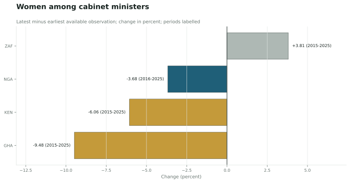
Source: GDI Country Studies calculation; Derived from normalized input series in this run; indicator female_minister_share; unit: percent. Limitation: A derived value inherits the definitions, revisions, and missingness of every input series.
Rule of law
NGA records -1.0 estimate (-2.5 to 2.5) in 2024. The earliest available value in this run is -1.0 in 2015, a change of -0.05 estimate (-2.5 to 2.5). The median of peers' latest non-missing observations is 0.0 estimate (-2.5 to 2.5). This is a descriptive comparison; different latest years and source-specific estimation methods require caution.
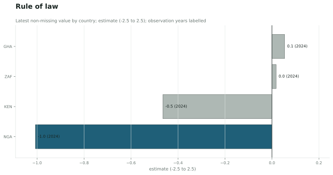
Source: World Bank; Worldwide Governance Indicators; indicator GOV_WGI_RL.EST; unit: estimate (-2.5 to 2.5). Limitation: Use with its standard error and as a diagnostic signal rather than direct proof of legal performance.
Control of corruption
NGA records -1.1 estimate (-2.5 to 2.5) in 2024. The earliest available value in this run is -1.2 in 2015, a change of +0.05 estimate (-2.5 to 2.5). The median of peers' latest non-missing observations is -0.2 estimate (-2.5 to 2.5). This is a descriptive comparison; different latest years and source-specific estimation methods require caution.
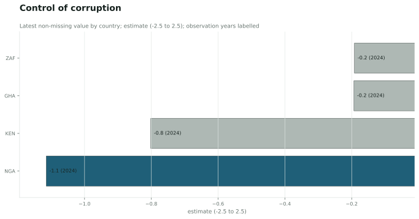
Source: World Bank; Worldwide Governance Indicators; indicator GOV_WGI_CC.EST; unit: estimate (-2.5 to 2.5). Limitation: Perceptions and source composition change; the estimate is not a direct count of corruption.
Voice and accountability
NGA records -0.7 estimate (-2.5 to 2.5) in 2024. The earliest available value in this run is -0.5 in 2015, a change of -0.21 estimate (-2.5 to 2.5). The median of peers' latest non-missing observations is 0.2 estimate (-2.5 to 2.5). This is a descriptive comparison; different latest years and source-specific estimation methods require caution.
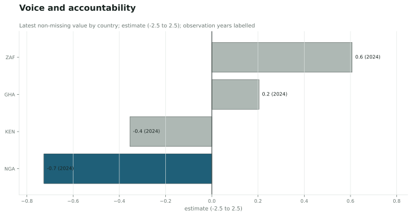
Source: World Bank; Worldwide Governance Indicators; indicator GOV_WGI_VA.EST; unit: estimate (-2.5 to 2.5). Limitation: This broad composite does not identify which accountability institution drives change.
Political stability and absence of violence
NGA records -2.0 estimate (-2.5 to 2.5) in 2024. The earliest available value in this run is -1.7 in 2015, a change of -0.33 estimate (-2.5 to 2.5). The median of peers' latest non-missing observations is -0.6 estimate (-2.5 to 2.5). This is a descriptive comparison; different latest years and source-specific estimation methods require caution.
Source: World Bank; Worldwide Governance Indicators; indicator GOV_WGI_PV.EST; unit: estimate (-2.5 to 2.5). Limitation: The composite does not replace event-level conflict or security data.
Regulatory quality
NGA records -0.6 estimate (-2.5 to 2.5) in 2024. The earliest available value in this run is -0.7 in 2015, a change of +0.11 estimate (-2.5 to 2.5). The median of peers' latest non-missing observations is -0.1 estimate (-2.5 to 2.5). This is a descriptive comparison; different latest years and source-specific estimation methods require caution.
Source: World Bank; Worldwide Governance Indicators; indicator GOV_WGI_RQ.EST; unit: estimate (-2.5 to 2.5). Limitation: A broad perception-based composite cannot identify sector-specific regulatory implementation.
Number of cabinet ministers
NGA records 34.00 persons in 2025. The earliest available value in this run is 0.00 in 2015, a change of +34.00 persons. The median of peers' latest non-missing observations is 27.00 persons. This is a descriptive comparison; different latest years and source-specific estimation methods require caution.
Source: WhoGov (Nuffield College and University of Oslo); WhoGov cross-sectional dataset, version 4.0; indicator n_minister; unit: persons. Limitation: WhoGov is a research dataset rather than national official statistics. Annual records normally represent the cabinet observed in July (September 1966 and January 1970). Counts cabinet ministers only; deputy and junior ministers are excluded. Cabinet classification is coded manually country by country.
Number of female cabinet ministers
NGA records 3.00 persons in 2025. The earliest available value in this run is 0.00 in 2015, a change of +3.00 persons. The median of peers' latest non-missing observations is 6.00 persons. This is a descriptive comparison; different latest years and source-specific estimation methods require caution.
Source: WhoGov (Nuffield College and University of Oslo); WhoGov cross-sectional dataset, version 4.0; indicator n_female_minister; unit: persons. Limitation: WhoGov is a research dataset rather than national official statistics. Annual records normally represent the cabinet observed in July (September 1966 and January 1970). A count, not a share. Divide by n_minister only for matching country-year observations and retain missing values when either input is unavailable.
Infrastructure and Connectivity
These indicators were present in the validated pipeline run and were added automatically.
Access to electricity
NGA records 62.5 percent of population in 2024. The earliest available value in this run is 43.2 in 2000, a change of +19.30 percent of population. The median of peers' latest non-missing observations is 90.2 percent of population. This is a descriptive comparison; different latest years and source-specific estimation methods require caution.
Source: World Bank; World Development Indicators; indicator EG.ELC.ACCS.ZS; unit: percent of population. Limitation: Connection access does not measure reliability, affordability, or hours of service.
Transmission and distribution losses
NGA records 14.2 percent of output in 2023. The earliest available value in this run is 20.0 in 2000, a change of -5.85 percent of output. The median of peers' latest non-missing observations is 11.2 percent of output. This is a descriptive comparison; different latest years and source-specific estimation methods require caution.
Source: World Bank; World Development Indicators; indicator EG.ELC.LOSS.ZS; unit: percent of output. Limitation: Technical and commercial losses are not separated consistently.
Electric power consumption
NGA records 144.1 kWh per capita in 2023. The earliest available value in this run is 95.55 in 2000, a change of +48.58 kWh per capita. The median of peers' latest non-missing observations is 565.0 kWh per capita. This is a descriptive comparison; different latest years and source-specific estimation methods require caution.
Source: World Bank; World Development Indicators; indicator EG.USE.ELEC.KH.PC; unit: kWh per capita. Limitation: The series may lag and does not measure reliability or distributional access.
Fossil-fuel electricity production
NGA records 75.5 percent of total electricity production in 2022. The earliest available value in this run is 62.7 in 2000, a change of +12.74 percent of total electricity production. The median of peers' latest non-missing observations is 63.9 percent of total electricity production. This is a descriptive comparison; different latest years and source-specific estimation methods require caution.
Source: World Bank; World Development Indicators; indicator EG.ELC.FOSL.ZS; unit: percent of total electricity production. Limitation: Generation shares can lag and do not measure installed capacity.
Hydroelectricity production
NGA records 22.2 percent of total electricity production in 2023. The earliest available value in this run is 37.3 in 2000, a change of -15.05 percent of total electricity production. The median of peers' latest non-missing observations is 28.3 percent of total electricity production. This is a descriptive comparison; different latest years and source-specific estimation methods require caution.
Source: World Bank; World Development Indicators; indicator EG.ELC.HYRO.ZS; unit: percent of total electricity production. Limitation: Hydrological variation can shift annual generation shares.
Renewable electricity excluding hydro
NGA records 22.2 percent of total electricity production in 2021. The earliest available value in this run is 42.8 in 2000, a change of -20.53 percent of total electricity production. The median of peers' latest non-missing observations is 34.9 percent of total electricity production. This is a descriptive comparison; different latest years and source-specific estimation methods require caution.
Source: World Bank; World Development Indicators; indicator EG.ELC.RNEW.ZS; unit: percent of total electricity production. Limitation: This indicator excludes hydroelectricity.
Energy imports, net
NGA records -66.3 percent of energy use in 2022. The earliest available value in this run is -317.9 in 2000, a change of +251.60 percent of energy use. The median of peers' latest non-missing observations is -12.5 percent of energy use. This is a descriptive comparison; different latest years and source-specific estimation methods require caution.
Source: World Bank; World Development Indicators; indicator EG.IMP.CONS.ZS; unit: percent of energy use. Limitation: Negative values indicate net exports.
Air transport passengers carried
NGA records 5,269,404 passengers in 2023. The earliest available value in this run is 507,396.0 in 2000, a change of +4762007.78 passengers. The median of peers' latest non-missing observations is 5,138,290 passengers. This is a descriptive comparison; different latest years and source-specific estimation methods require caution.
Source: World Bank; World Development Indicators; indicator IS.AIR.PSGR; unit: passengers. Limitation: Passengers are attributed to carriers registered in the country, not necessarily domestic airports.
Mobile cellular subscriptions
NGA records 70.76 per 100 people in 2024. The earliest available value in this run is 0.02 in 2000, a change of +70.74 per 100 people. The median of peers' latest non-missing observations is 126.5 per 100 people. This is a descriptive comparison; different latest years and source-specific estimation methods require caution.
Source: World Bank; World Development Indicators; indicator IT.CEL.SETS.P2; unit: per 100 people. Limitation: Subscriptions are not unique users and can exceed 100 per 100 people.
Secure Internet servers
NGA records 98.36 per 1 million people in 2024. The earliest available value in this run is 0.61 in 2010, a change of +97.75 per 1 million people. The median of peers' latest non-missing observations is 399.7 per 1 million people. This is a descriptive comparison; different latest years and source-specific estimation methods require caution.
Source: World Bank; World Development Indicators; indicator IT.NET.SECR.P6; unit: per 1 million people. Limitation: Server location and certificate practices affect cross-country interpretation.
Manufacturing value added
NGA records 8.3 percent of GDP in 2025. The earliest available value in this run is 13.9 in 2000, a change of -5.68 percent of GDP. The median of peers' latest non-missing observations is 10.1 percent of GDP. This is a descriptive comparison; different latest years and source-specific estimation methods require caution.
Source: World Bank; World Development Indicators; indicator NV.IND.MANF.ZS; unit: percent of GDP. Limitation: Rebasing and sector-classification revisions can create breaks.
Logistics Performance Index
NGA records 2.60 score 1 to 5 in 2022. The earliest available value in this run is 2.40 in 2007, a change of +0.20 score 1 to 5. The median of peers' latest non-missing observations is 2.81 score 1 to 5. This is a descriptive comparison; different latest years and source-specific estimation methods require caution.
Source: World Bank; World Development Indicators; indicator LP.LPI.OVRL.XQ; unit: score 1 to 5. Limitation: LPI is perception-based and available only in selected survey years.
Poverty and Distribution
These indicators were present in the validated pipeline run and were added automatically.
International poverty headcount at 3 dollars a day (2021 PPP)
NGA records 41.8 percent of population in 2022. The earliest available value in this run is 51.1 in 2003, a change of -9.30 percent of population. The median of peers' latest non-missing observations is 39.0 percent of population. This is a descriptive comparison; different latest years and source-specific estimation methods require caution.
Source: World Bank; World Development Indicators; indicator SI.POV.DDAY; unit: percent of population. Limitation: Survey years are sparse; income and consumption welfare concepts differ across countries.
Gini index
NGA records 33.90 index 0 to 100 in 2022. The earliest available value in this run is 40.10 in 2003, a change of -6.20 index 0 to 100. The median of peers' latest non-missing observations is 43.50 index 0 to 100. This is a descriptive comparison; different latest years and source-specific estimation methods require caution.
Source: World Bank; World Development Indicators; indicator SI.POV.GINI; unit: index 0 to 100. Limitation: Income and consumption concepts, survey years, and coverage differ across countries.
Smoking and Cancer
These indicators were present in the validated pipeline run and were added automatically.
Adult smoking prevalence
NGA records 3.1 percent of adults in 2024. The earliest available value in this run is 9.9 in 2000, a change of -6.80 percent of adults. The median of peers' latest non-missing observations is 9.6 percent of adults. This is a descriptive comparison; different latest years and source-specific estimation methods require caution.
Source: World Bank; World Development Indicators; indicator SH.PRV.SMOK; unit: percent of adults. Limitation: Modeled estimates and underlying survey definitions vary.
Childcare and Early Education
These indicators were present in the validated pipeline run and were added automatically.
Children enrolled in pre-primary education
NGA records 23.5 percent in 2018. The earliest available value in this run is 25.5 in 2001, a change of -2.06 percent. The median of peers' latest non-missing observations is 65.1 percent. This is a descriptive comparison; different latest years and source-specific estimation methods require caution.
Source: World Bank; World Development Indicators; indicator SE.PRE.ENRR; unit: percent. Limitation: Pre-primary enrollment is not identical to childcare participation and gross rates can exceed 100.
Core coverage audit
Overall status: pass. The threshold is domain-specific so sparse but important series do not silently disappear.
| Domain | Status | Available / minimum | Missing indicators | Rationale |
|---|---|---|---|---|
| Demographic scale and transition | pass | 5 / 4 | None | Country scale, growth, urbanization, age structure, and fertility jointly determine service and employment pressure. |
| Macroeconomic performance and living standards | pass | 3 / 3 | None | Aggregate growth must be read with real living-standard levels and price stability. |
| Fiscal capacity | pass | 2 / 2 | None | Revenue mobilization and debt burden constrain implementation choices. |
| Economic structure | pass | 3 / 3 | None | Sector shares show the production structure behind growth and employment. |
| Poverty and inequality | pass | 2 / 1 | None | At least one harmonized distributional outcome is required, with survey-year caveats. |
| Labor-market absorption and job quality | pass | 4 / 3 | None | Unemployment alone is insufficient in a highly informal labor market. |
| Education access and public effort | pass | 3 / 2 | None | Human-capital analysis needs both outcomes or access and fiscal effort. |
| Health outcomes and public financing | pass | 4 / 3 | None | Spending inputs must be paired with mortality and longevity outcomes. |
| Basic services, infrastructure, and digital access | pass | 5 / 4 | None | Electricity, water, sanitation, connectivity, and logistics are distinct implementation constraints. |
| Financial inclusion and external integration | pass | 4 / 3 | None | Domestic access to finance and external exposure capture different development channels. |
| Governance dimensions | pass | 6 / 5 | None | Government effectiveness cannot stand in for rule of law, accountability, stability, corruption control, or regulatory quality. |
Indicator coverage inventory
Reference-notebook variables and core country-profile indicators were separated into comparable variables, derived analyses, national-data requirements, and non-variable workflow notes. Coverage status — adapter_needed: 19, available_current_run: 70, derived_analysis: 7, national_data_required: 26, non_variable: 3, target_data_unavailable: 3.
| Domain | Variable or analysis | Status | Source / adapter | Note |
|---|---|---|---|---|
| Poverty and inequality | International poverty headcount at 3 dollars a day (2021 PPP) | available_current_run | World Bank Poverty and Inequality Platform | Survey years are sparse and welfare concepts differ. |
| Poverty and inequality | Relative poverty at 50% and 60% of median income | adapter_needed | OECD Income Distribution Database | Both thresholds and matching income concepts must be retrieved. |
| Poverty and inequality | Cross-country poverty-threshold gap | derived_analysis | Derived from OECD 50% and 60% series | Do not compare countries unless years and income definitions align. |
| Poverty and inequality | Poverty level versus threshold-sensitivity association | derived_analysis | Derived statistical analysis | Report sample size and avoid causal language. |
| Poverty and inequality | Relative poverty trend at 50% of median income | adapter_needed | OECD Income Distribution Database | Not available for many non-OECD countries. |
| Poverty and inequality | Relative poverty trend at 60% of median income | adapter_needed | OECD Income Distribution Database | Not available for many non-OECD countries. |
| Poverty and inequality | Relative poverty by age group | adapter_needed | OECD Income Distribution Database | Age bands and reference years must match. |
| Poverty and inequality | Working-age versus old-age poverty association | derived_analysis | Derived from OECD age-specific poverty | Correlation is descriptive. |
| Poverty and inequality | Income poverty and household-asset context among older people | national_data_required | Household wealth or asset survey | Income and assets cannot be conflated. |
| Family support | Source of parental living-cost support reported by household head | national_data_required | National household or social survey | Question wording and household role are country-specific. |
| Family support | Source of parental living-cost support reported by spouse | national_data_required | National household or social survey | Must use comparable respondent categories. |
| Pensions | Contributors to the main pension scheme | national_data_required | National pension administrator or ILO Social Security Inquiry | Scheme definitions differ. |
| Pensions | Pension beneficiaries by scheme type | national_data_required | National pension administrator | Avoid adding overlapping beneficiary counts. |
| Pensions | Main pension beneficiaries | national_data_required | National pension administrator | Use persons and coverage rates separately. |
| Pensions | Pension beneficiary coverage rate by scheme | adapter_needed | ILO Social Security Inquiry or national data | Denominators must match legal eligibility. |
| Pensions | Average or total pension benefits | national_data_required | National pension administrator | Deflate nominal amounts and distinguish totals from averages. |
| Pensions | Mandatory pension contribution rate | adapter_needed | OECD Pensions at a Glance or ISSA | Contribution bases and employer-employee splits differ. |
| Pensions | Non-contributory old-age and disability beneficiaries | national_data_required | National social-protection administrator | Separate old-age and disability programs. |
| Pensions | Non-contributory old-age and disability benefit expenditure | national_data_required | National social-protection administrator | Deflate nominal expenditure. |
| Social expenditure | Total social expenditure as a share of GDP | adapter_needed | OECD SOCX; ILO World Social Protection Database | OECD coverage is limited for many GDI countries. |
| Social expenditure | Total social expenditure in real currency or PPP | national_data_required | National budget and social-protection accounts | Nominal totals are not comparable over time. |
| Social expenditure | Social expenditure by policy function | adapter_needed | OECD SOCX or national functional accounts | Use a common functional classification. |
| Social expenditure | Public social expenditure by detailed function | adapter_needed | OECD SOCX or national functional accounts | A dated snapshot should not be presented as current. |
| Social expenditure | Mandatory private social expenditure and components | adapter_needed | OECD SOCX | Definitions are institutionally specific. |
| Social expenditure | Social expenditure trends by policy function | adapter_needed | OECD SOCX or national accounts | Avoid overcrowded charts; use small multiples. |
| Social expenditure | Public social expenditure as a share of GDP | adapter_needed | OECD SOCX | Non-OECD comparability is limited. |
| Social expenditure | Public versus mandatory private social expenditure | adapter_needed | OECD SOCX | Components must use the same year and accounting basis. |
| Social expenditure | Social expenditure as a share of general government expenditure | adapter_needed | OECD SOCX and government finance statistics | Ratio combines two separately revised aggregates. |
| Social expenditure | Projected social expenditure | derived_analysis | Scenario model | Forecasts require assumptions, uncertainty bands, and a clear baseline. |
| Unemployment insurance | Unemployment-insurance beneficiaries | national_data_required | National unemployment-insurance administrator | Separate beneficiaries, claims, and spells. |
| Unemployment insurance | Unemployment-insurance expenditure | national_data_required | National unemployment-insurance administrator | Deflate nominal expenditure. |
| Unemployment insurance | Post-pandemic unemployment-benefit normalization | derived_analysis | Derived from national program expenditure | Define the counterfactual baseline rather than calling a level normal. |
| Health expenditure | Current health expenditure as a share of GDP | available_current_run | World Bank WHO Global Health Expenditure Database | A higher share can reflect a smaller denominator. |
| Health services | Medical-assistance beneficiaries and expenditure | national_data_required | National health or social-assistance administrator | Distinguish recipients, claims, and expenditure. |
| Health workforce | Physicians per 1,000 people | available_current_run | World Bank WHO health-workforce data | Observation years may be sparse and professional definitions vary. |
| Health workforce | Physicians by subnational region | national_data_required | National health-workforce statistics and boundaries | Use rates as well as counts. |
| Health workforce | Physicians employed in health institutions | national_data_required | National health-workforce statistics | Do not confuse headcount with full-time equivalents. |
| Health capacity | Hospital beds per 1,000 people | available_current_run | World Bank WHO health-facility data | Definitions and latest years vary. |
| Health capacity | Hospital beds per 1,000 people by region | national_data_required | National health-facility statistics and boundaries | Use a common reference year. |
| Health capacity | Hospital beds by region over time | national_data_required | National health-facility statistics | Counts should be paired with population rates. |
| Health facilities | Hospitals and pharmacies | national_data_required | National facility registry | Facility counts do not measure capacity or quality. |
| Health facilities | Health facilities by subnational region | national_data_required | National facility registry and boundaries | Use stable regional definitions. |
| Health facilities | Health facilities by type | national_data_required | National facility registry | Classification changes must be documented. |
| Smoking | Adult smoking prevalence | available_current_run | World Bank WHO tobacco data | Modeled estimates and survey definitions vary. |
| Smoking | Smoking prevalence by income group | national_data_required | National health survey microdata | Age-standardize before comparing income groups. |
| Smoking | Smoking prevalence by age group | national_data_required | National health survey microdata | Keep age bands stable. |
| Cancer | Smoking prevalence and lung-cancer outcome association | derived_analysis | Derived from WHO tobacco and IARC or national registry data | Use long lags and avoid contemporaneous causal inference. |
| Cancer | Registered cancer patients by cancer type | national_data_required | National cancer registry or claims data | Patients, incidence, prevalence, and visits are different measures. |
| Cancer | Registered lung-cancer patients by region | national_data_required | National cancer registry or claims data | Age-standardize and distinguish residence from provider location. |
| Old age | Old-age social expenditure | adapter_needed | OECD SOCX or ILO social-protection data | Coverage and accounting definitions differ. |
| Childcare | Children enrolled in pre-primary education | available_current_run | World Bank UNESCO Institute for Statistics | Enrollment is not identical to childcare participation. |
| Childcare | Childcare enrollment by provider type | national_data_required | National childcare administrative data | Provider classifications differ across countries. |
| Childcare | Childcare workforce | national_data_required | National childcare administrative data | Prefer child-to-staff ratios alongside headcounts. |
| Demography | Total fertility rate | available_current_run | UN DESA World Population Prospects 2024 | Includes estimates and Medium-variant projections. |
| Demography | Annual change in total fertility rate | available_current_run | GDI calculation from UN DESA WPP | Percent changes near small denominators require caution. |
| Macro economy | Real GDP growth | available_current_run | IMF World Economic Outlook | Separate actuals, estimates, and projections. |
| Macro economy | Target-country and peer-median real GDP growth | available_current_run | GDI benchmark from IMF WEO | Peer choice must be justified. |
| Macro economy | Target minus peer-median real GDP growth | available_current_run | GDI benchmark from IMF WEO | Not a causal estimate. |
| Labor | Unemployment rate | available_current_run | ILOSTAT | Informality and model status affect interpretation. |
| Human development | Life expectancy at birth | available_current_run | World Bank | Modelled where vital registration is weak. |
| Digital access | Individuals using the Internet | available_current_run | World Bank | Use does not measure quality or affordability. |
| External economy | Merchandise export concentration index | available_current_run | UNCTADstat | Concentration measures composition rather than export volume. |
| Governance | Government effectiveness estimate | available_current_run | Worldwide Governance Indicators | Perception-based composite with uncertainty. |
| Executive organization | Leader total observed experience | available_current_run | WhoGov 4.0 | Dataset coverage and coding rules apply. |
| Executive organization | Number of cabinet ministers | available_current_run | WhoGov 4.0 | Count depends on the dataset's cabinet definition. |
| Executive organization | Number of female cabinet ministers | available_current_run | WhoGov 4.0 | Use with total cabinet size. |
| Executive organization | Average cabinet tenure | available_current_run | WhoGov 4.0 | Average tenure does not measure competence. |
| Executive organization | Women among cabinet ministers | available_current_run | GDI calculation from WhoGov counts | Small cabinets can produce large percentage changes. |
| Trade | Exports of goods and services | target_data_unavailable | World Bank WDI | Gross exports do not measure domestic value added. |
| Trade | Imports of goods and services | target_data_unavailable | World Bank WDI | Imports include investment inputs as well as consumption. |
| Trade | Trade in goods and services | target_data_unavailable | World Bank WDI | Small economies can have mechanically higher trade shares. |
| Trade | Current account balance | available_current_run | World Bank WDI | Commodity shocks and revisions can dominate annual movements. |
| Trade | International tourism arrivals | available_current_run | World Bank and UN Tourism | Country reporting conventions differ. |
| Trade | Medium- and high-tech manufacturing value added | available_current_run | World Bank and UNIDO | Industry classifications and missing years require caution. |
| Trade | High-technology exports | available_current_run | World Bank WDI | Re-exports can distort interpretation. |
| Trade | Imports and exports joint trend | derived_analysis | Derived from NE.EXP.GNFS.ZS and NE.IMP.GNFS.ZS | Use matching years and units. |
| Trade | Merchandise exports | available_current_run | World Bank and WTO | Current dollars combine prices, volumes, and exchange rates. |
| Trade | Merchandise exports by product component | adapter_needed | UN Comtrade or UNCTAD product table | Requires explicit product and partner filters. |
| Trade | Fuel imports | available_current_run | World Bank and UN Comtrade | Product classifications and gaps vary. |
| Trade | Fuel export value | adapter_needed | UN Comtrade or UNCTAD product table | Requires an explicit fuel product definition. |
| Trade | Export Quality Index | adapter_needed | IMF export diversification and quality dataset | Verify the vintage and current official download route. |
| Infrastructure | Telecommunication Infrastructure Index | adapter_needed | UN E-Government Survey | The biennial composite and its components require a versioned file adapter. |
| Infrastructure | Access to electricity | available_current_run | World Bank WDI | Access does not measure reliability or affordability. |
| Infrastructure | Transmission and distribution losses | available_current_run | World Bank WDI | Technical and commercial losses are not consistently separated. |
| Infrastructure | Electric power consumption | available_current_run | World Bank WDI | The series may lag and masks distributional inequality. |
| Infrastructure | Fossil-fuel electricity production | available_current_run | World Bank WDI | Generation shares do not measure installed capacity. |
| Infrastructure | Hydroelectricity production | available_current_run | World Bank WDI | Hydrological variation affects annual shares. |
| Infrastructure | Renewable electricity excluding hydro | available_current_run | World Bank WDI | This series excludes hydropower. |
| Infrastructure | Energy imports, net | available_current_run | World Bank WDI | Negative values denote net exports. |
| Infrastructure | Air transport passengers carried | available_current_run | World Bank and ICAO | Passengers are assigned to nationally registered carriers. |
| Infrastructure | Mobile cellular subscriptions | available_current_run | World Bank and ITU | Subscriptions are not unique users. |
| Infrastructure | Secure Internet servers | available_current_run | World Bank and Netcraft | Server location and certificate practices matter. |
| Infrastructure | Manufacturing value added | available_current_run | World Bank WDI | Rebasing can create structural breaks. |
| Infrastructure | Logistics Performance Index | available_current_run | World Bank LPI | Perception-based and available only in survey waves. |
| Core country profile | Population total | available_current_run | World Bank WDI | Population estimates are revised after censuses and demographic updates. |
| Core country profile | Population growth | available_current_run | World Bank WDI | This is a growth rate rather than a population level. |
| Core country profile | Urban population | available_current_run | World Bank WDI | National definitions of urban areas differ. |
| Core country profile | Population ages 0 to 14 | available_current_run | World Bank WDI | Age shares are model-based demographic estimates. |
| Core country profile | GDP per capita at purchasing power parity | available_current_run | World Bank WDI | PPP benchmark revisions can change historical levels. |
| Core country profile | Inflation consumer prices | available_current_run | World Bank WDI | National baskets and rebasing schedules differ. |
| Core country profile | Foreign direct investment net inflows | available_current_run | World Bank WDI | Exceptional intracompany transactions can dominate annual flows. |
| Core country profile | General government revenue | available_current_run | IMF World Economic Outlook | Separate historical observations estimates and projections. |
| Core country profile | General government gross debt | available_current_run | IMF World Economic Outlook | Definitions and public-sector coverage vary; projections are not outcomes. |
| Core country profile | Agriculture value added | available_current_run | World Bank WDI | Rebasing and classifications can create breaks. |
| Core country profile | Industry value added | available_current_run | World Bank WDI | Industry includes construction and classifications can change. |
| Core country profile | Services value added | available_current_run | World Bank WDI | Service-sector classifications and residuals differ. |
| Core country profile | Gini index | available_current_run | World Bank Poverty and Inequality Platform | Income and consumption concepts and survey years differ. |
| Core country profile | Youth unemployment | available_current_run | World Bank and ILOSTAT | The denominator is the youth labor force not all young people. |
| Core country profile | Female labor force participation | available_current_run | World Bank and ILOSTAT | Participation does not measure job quality or earnings. |
| Core country profile | Vulnerable employment | available_current_run | World Bank and ILOSTAT | Employment status is a proxy rather than a legal job-quality measure. |
| Core country profile | Adult literacy rate | available_current_run | World Bank and UNESCO UIS | Assessment methods and observation years differ. |
| Core country profile | Secondary school enrollment gross | available_current_run | World Bank and UNESCO UIS | Gross enrollment can exceed 100 and does not measure completion. |
| Core country profile | Government education expenditure | available_current_run | World Bank and UNESCO UIS | Coverage across government levels and off-budget spending differs. |
| Core country profile | Domestic general government health expenditure | available_current_run | World Bank and WHO | A GDP share does not measure efficiency incidence or quality. |
| Core country profile | Under-five mortality rate | available_current_run | World Bank and UN IGME | Modeled estimates combine multiple source types. |
| Core country profile | Maternal mortality ratio | available_current_run | World Bank and UN inter-agency estimates | Uncertainty is substantial where registration systems are incomplete. |
| Core country profile | Account ownership | available_current_run | World Bank Global Findex | Survey waves are intermittent and ownership does not imply active use. |
| Core country profile | Safely managed drinking water services | available_current_run | World Bank and WHO UNICEF JMP | Do not substitute basic-service coverage when safely managed data are missing. |
| Core country profile | Safely managed sanitation services | available_current_run | World Bank and WHO UNICEF JMP | Safely managed sanitation is stricter than basic sanitation. |
| Core country profile | CO2 emissions excluding LULUCF per capita | available_current_run | World Bank WDI | This excludes land-use change and does not measure climate vulnerability. |
| Core country profile | Rule of law | available_current_run | World Bank WGI | Use the estimate with its standard error and source composition. |
| Core country profile | Control of corruption | available_current_run | World Bank WGI | This is not a direct count of corruption. |
| Core country profile | Voice and accountability | available_current_run | World Bank WGI | The composite cannot identify which institution drives change. |
| Core country profile | Political stability and absence of violence | available_current_run | World Bank WGI | Use event-level conflict data for mechanism-specific claims. |
| Core country profile | Regulatory quality | available_current_run | World Bank WGI | The composite cannot identify sector-specific implementation. |
| Workflow | Experimental WITS setup cell | non_variable | Excluded from chart catalog | The notebook itself marks this component under construction. |
| Workflow | Notebook setup and helper code | non_variable | Excluded from chart catalog | Credentials and implementation code are never copied into report assets. |
| Workflow | Notebook task notes and generated summaries | non_variable | Excluded from chart catalog | These are workflow records, not statistical measures. |
Human Development and Digital Access
Outcome and access indicators reveal constraints that aggregate growth alone cannot identify.
Life expectancy at birth
NGA records 54.63 years in 2024. The earliest available value in this run is 51.94 in 2015, a change of +2.70 years. The median of peers' latest non-missing observations is 65.69 years. This is a descriptive comparison; different latest years and source-specific estimation methods require caution.
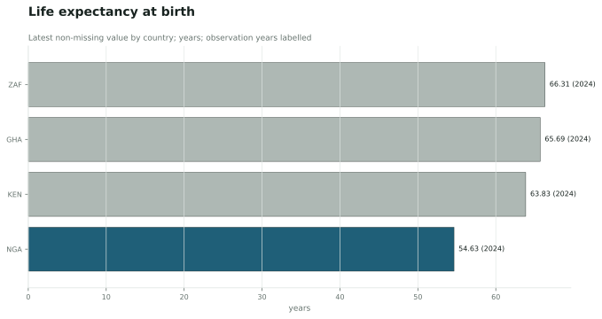
Source: World Bank; World Development Indicators; indicator SP.DYN.LE00.IN; unit: years.
Internet use: ten-year country trends
NGA records 41.2 percent of population in 2024. The earliest available value in this run is 22.5 in 2015, a change of +18.70 percent of population. The median of peers' latest non-missing observations is 72.2 percent of population. This is a descriptive comparison; different latest years and source-specific estimation methods require caution.
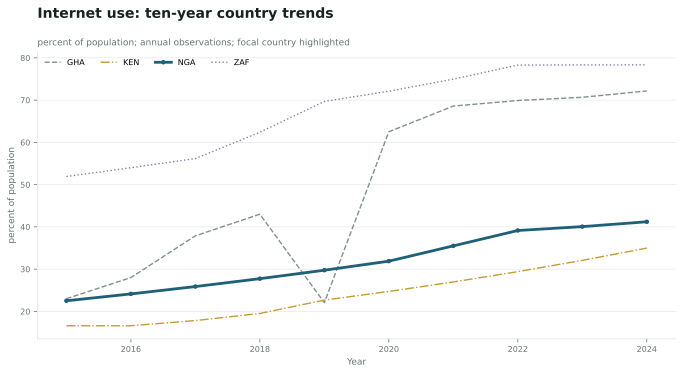
Source: World Bank; World Development Indicators; indicator IT.NET.USER.ZS; unit: percent of population.